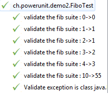

This is the PowerUnit Framework : A test framework for Java 8+.
Concepts Annotations processor Surefire integration About Hamcrest integration Test framework creation
This framework provides a test framework for Java, based on the JDK
1.8. The idea are similar to the idea of the others test framework.
First of all here are two simple examples.
Examples
The Hello world test example
import ch.powerunit.Test;
import ch.powerunit.TestSuite;
public class HelloWorldTest implements TestSuite {
@Test()
public void testHelloWorld1() {
assertThat("Hello world").is(containsString(" "));
}
}
Several elements are interesting here :
- The class implements the {@link ch.powerunit.TestSuite}. This
is not strictly required by the framework but it is the best way to
integrate nicely with the framework. This implementation provides the
DSL of the framework (assertions, matchers, etc). As the interface
name says it, a test class is considered as a test suite (has it
should contains a set of test, that share a common fixture).
- The test method are annotated with the {@link
ch.powerunit.Test} annotation.
- The {@link ch.powerunit.TestSuite assertThat} used here is
one of the several way to do assertion. Here, only assertion based on
DSL syntax and hamcrest matcher are provided. There is no AssertTrue
for instance.
The Hello world with parameter test example
import java.util.Arrays;
import java.util.stream.Stream;
import ch.powerunit.Parameter;
import ch.powerunit.Parameters;
import ch.powerunit.Test;
import ch.powerunit.TestSuite;
public class HelloWorldParameterTest implements TestSuite {
@Parameters("Input string is {0}, subString idx is {1}, expected result is {2}")
public static Stream<Object[]> getDatas() {
return Arrays.stream(new Object[][] { { "ab", 0, "ab" }, { "ab", 1, "b" } });
}
@Parameter(0)
public String inputString;
@Parameter(1)
public int inputIndex;
@Parameter(2)
public String expectedString;
@Test
public void testSubString() {
assertThat(inputString.substring(inputIndex)).is(expectedString);
}
}
The interesting elements here are :
- The concept of providing test parameter is similar to the one
of JUnit, but there is no need to use an alternate test runner (in
fact the concept of test runner doesn't exist in PowerUnit).
- Expected data provider type is
{@link
java.util.stream.Stream Stream<Object[]>}. As it is a stream,
all new features of Java 8 (map, collect, etc) are available and can
be defined prior returning the result.
Tests action sequences order
Each test class is executed in isolation. The first action to be done
is the instantiation of the class itself. Then the test execution can
be :
- If the test use the @Parameters approach, the annotated
method will be used to produce a list of input data. Each line of
data will trigger the next step (injection at each run of the data
into the field annotated @Parameter); If the @Parameters
approach is not used, only one execution of the tests will be done.
- For each method annotated @Test, an execution will be
done. This execution will be based on the passed @Rule, from the
upper class to the lower class.
To demonstrate this sequence of action, here is an example of all
theses concepts. Let's assume we have the two following classes :
import ch.powerunit.Rule;
import ch.powerunit.TestRule;
import ch.powerunit.TestSuite;
import ch.powerunit.rules.TestContextRule;
public abstract class ParentTest implements TestSuite {
protected final TestContextRule context = new TestContextRule<>();
@Rule
public final TestRule level1 = context.around(before(this::prepare1).around(after(this::clean1)));
public final void prepare1() {
System.out.println(context.getTestContext().getFullTestName() + ":prepare1");
}
public final void clean1() {
System.out.println(context.getTestContext().getFullTestName() + ":clean1");
}
}
import java.util.Arrays;
import java.util.stream.Stream;
import ch.powerunit.Parameter;
import ch.powerunit.Parameters;
import ch.powerunit.Rule;
import ch.powerunit.Test;
import ch.powerunit.TestRule;
public class ChildrenTest extends ParentTest {
@Parameters
public static Stream<Object[]> getDatas() {
return Arrays.stream(new Object[][] { { "A" }, { "B" } });
}
@Parameter(0)
public String p1;
@Rule
public final TestRule level2 = before(this::prepare2).around(after(this::clean2));
public final void prepare2() {
System.out.println(context.getTestContext().getFullTestName() + ":prepare2");
}
public final void clean2() {
System.out.println(context.getTestContext().getFullTestName() + ":clean2");
}
@Test
public void test1() {
System.out.println("test1 " + p1);
}
@Test
public void test2() {
System.out.println("test2 " + p1);
}
}
The first class
ParentTest
defines a first level of rules, that will provide information on the
test execution, one method to be executed before each test, and one
method to be executed after each test. Then the second class
ChildenTest
extends the previous one and defines a second level of rules, with all
to before and after method. In addition, each test will be executed
twice, once with
p1=A
, once with
p1=B
. The output of the execution will be :
ch.powerunit.examples.ChildrenTest:test2[0]:prepare1
ch.powerunit.examples.ChildrenTest:test2[0]:prepare2
test2 A
ch.powerunit.examples.ChildrenTest:test2[0]:clean2
ch.powerunit.examples.ChildrenTest:test2[0]:clean1
ch.powerunit.examples.ChildrenTest:test1[0]:prepare1
ch.powerunit.examples.ChildrenTest:test1[0]:prepare2
test1 A
ch.powerunit.examples.ChildrenTest:test1[0]:clean2
ch.powerunit.examples.ChildrenTest:test1[0]:clean1
ch.powerunit.examples.ChildrenTest:test2[1]:prepare1
ch.powerunit.examples.ChildrenTest:test2[1]:prepare2
test2 B
ch.powerunit.examples.ChildrenTest:test2[1]:clean2
ch.powerunit.examples.ChildrenTest:test2[1]:clean1
ch.powerunit.examples.ChildrenTest:test1[1]:prepare1
ch.powerunit.examples.ChildrenTest:test1[1]:prepare2
test1 B
ch.powerunit.examples.ChildrenTest:test1[1]:clean2
ch.powerunit.examples.ChildrenTest:test1[1]:clean1
It is possible to say that the before of the parent class are executed
before the once of the children class. The after are executed in the
reverse order. Also, as the before/after action use the result of the
TestContextRule
, it also show that this rule is execute before all others. As
parameters were used, the trace indicate that the sequence of rule
action are used for each parameter set, and for each test.
In some specific case, it is possible that one rule required, to be
builded, that another one is already executed. To do so, the
around
method also support receiving a
Supplier
parameter, that will be used, at the very last moment, to build the
rule.
Assertion and Assumption usage
Assertion and assumption are provided by the interface {@link
ch.powerunit.TestSuite TestSuite} that may be implemented by the test
class. Assertion and assumption use the same DSL language and
capabilities, but they are started by a different methods :
- The assertion are started by the methods named
assertXXX.
If the assertion fail, the test is marked as failed.
- The assumption are started by the methods named
assumeXXX.
If the assumption fail, the test is marked as skipped.
- The method named
fail fail the tests.
Several type of assertion/assumption are available :
assertThat/assumeThat
This
is the much simple usage. The goal is here to validate the passed
value against a specific check. The base syntax is (for the
assertion): assertThat(myObject)...
This method will
return an instance of {@link ch.powerunit.AssertThatObject
AssertThatObject}, which provides several method to validate the
passed object (equality, nullability or application of a hamcrest
matcher).
A specialized version of the assertThat method
exists and return {@link ch.powerunit.AssertThatString
AssertThatString}. This is an extension of AssertThatObject with
additional methods related to string.
assertThatIterable/assumeThatIterable
This
is an extension of the previous usage. The goal is here to validate
the passed iterable value against a specific check. The base syntax
is (for the assertion): assertThatIterable(myIterable)...
This method will return an instance of {@link
ch.powerunit.AssertThatIterable AssertThatIterable} (which is an
extension of {@link ch.powerunit.AssertThatObject AssertThatObject}),
providing the same features as before and several additional method
to validate the iterable (size, contains).
assertThatFunction/assumeThatFunction
This
is a much complicated assertion/assumption usage. Here the goal is to
check the application of a lambda function on an input
data. The base syntax is (for the assertion) :assertThatFunction((p)->p,myObject)...
This method will return an instance of {@link
ch.powerunit.AssertThatObject AssertThatObject}, which will be used
to validate the result of the function application.
assertThatBiFunction/assumeThatBiFunction
This
is a much complicated assertion/assumption usage. Here the goal is to
check the application of a lambda bifunction on two
input data. The base syntax is (for the assertion) :assertThatBiFunction((p1,p2)->p1+p2,myObject1,myObject2)...
This method will return an instance of {@link
ch.powerunit.AssertThatObject AssertThatObject}, which will be used
to validate the result of the bifunction application.
assertWhen/assumeWhen
This
is the approach to validate that some piece of code is throwing an
expected exception. This assertion/assumption will fail in case the
code doesn't thrown an exception or the thrown exception is not
accepted by the provided matcher. The base syntax is (for the
assertion) :assertWhen((p)->{/*...*/})... This method
will return an instance of {@link ch.powerunit.AssertThatException},
which will provide a way to specify the matcher to be used to check
the thrown exception.
The provides matcher also support the new {@link java.util.Optional
Optional} concept of Java 8.
[TOP]
PowerUnit provides an integration out of the box with the annotation
processor of the java compiler. This is provided by the {@link
org.power.processor.PowerUnitProcessor PowerUnitProcessor}. The goal of
this annotation processor is double :
This test system can integrated out of the box with Surefire. This is
done by adding this package as a dependencies of the surefire plugin :
<plugin>
<groupId>org.apache.maven.plugins</groupId>
<artifactId>maven-surefire-plugin</artifactId>
<dependencies>
<dependency>
<groupId>ch.powerunit</groupId>
<artifactId>powerunit</artifactId>
</dependency>
</dependencies>
</plugin>
[TOP]
Hamcrest is integrated with this framework, as a maven dependency. Here
the {@link ch.powerunit.TestSuite TestSuite} interface provides the
standard hamcrest DSL features, with some additional matcher (for
exception and the new {@link java.util.Optional Optional} class for
instance).
[TOP]
A special feature of PowerUnit exists to help creation of test
framework. The idea is here to be able to wrote a normal test case and
be able to expose it to normal test classes. This is done by using
three annotations :
TestDelegator
,
TestInterface
and
TestDelegate
. The annotation
TestDelegate
is used by the user of the test framework ; the two other annotations
are used by the test test framework developer. Let's assume, for the
example that we like to provide a test framework to validate the
Fibonacci function. To do so, we first need a class that can be used
from the test, define which method must be tested. This can be done
with the following class :
import ch.powerunit.TestInterface;
@TestInterface(FiboUsingFilteringTester.class)
public class FiboTestInterface {
public interface Fibo {
int fibo(int x);
}
private final Fibo method;
public FiboTestInterface(Fibo method) {
this.method=method;
}
public Fibo getMethod() {
return method;
}
}
This class use the annotation
TestInterface
and is just a simple POJO. In this case we use a functional interface
to receive the method to be tested ; The annotation reference an other
class, which is the implementation of the test :
import java.util.Arrays;
import java.util.function.BiFunction;
import java.util.stream.Stream;
import ch.powerunit.Parameter;
import ch.powerunit.Parameters;
import ch.powerunit.Test;
import ch.powerunit.TestDelegator;
import ch.powerunit.TestSuite;
@TestDelegator
public class FiboUsingFilteringTester implements TestSuite {
@Parameters()
public static Stream<Object[]> getDatas(FiboTestInterface param) {
return Arrays
.stream(new Object[][] { { 0, 0, null }, { 1, 1, null },
{ 2, 1, null }, { 3, 2, null }, { 4, 3, null },
{ 10, 55, null },
{ -1, -1, IllegalArgumentException.class } })
.map(TestSuite.DSL.addFieldToEachEntry(param.getMethod()))
.map(TestSuite.DSL
.<BiFunction
<String , Object[], Boolean>> addFieldToEachEntry(FiboUsingFilteringTester::validateTestMethod));
}
private static boolean validateTestMethod(String name, Object parameters[]) {
if (parameters[2] == null) {
return "testFib".equals(name);
}
return "testFibException".equals(name);
}
@Parameter(0)
public int x;
@Parameter(1)
public int y;
@Parameter(2)
public Class<?> expectedException;
@Parameter(3)
public FiboTestInterface.Fibo method;
@Parameter(value = 4, filter = true)
public BiFunction<String, Object[], Boolean> filter;
@Test(name = "validate the fib suite : {0}->{1}")
public void testFib() {
assertThat(method.fibo(x)).is(y);
}
@Test(name = "Validate exception is {2}")
public void testFibException() {
assertWhen((p) -> {
method.fibo(x);
}).throwException(instanceOf(expectedException));
}
}
This is a
normal test class, but this class is annotated with
TestDelegator
, is required to be a parameterized test and the method annotated with
Parameters
has one parameter which is the class defined previously.
The user of the framework will only be required to know the
class annotated with
TestInterface
. To use the framework, it is possible to do :
import ch.powerunit.Categories;
import ch.powerunit.TestDelegate;
import ch.powerunit.TestSuite;
@Categories({ "example", "demo" })
public class FiboTest implements TestSuite {
@TestDelegate
public final FiboTestInterface delegate = new FiboTestInterface(
new ch.powerunit.demo.Fibo()::fibo);
}
Field annotated with @TestDelegate will be used to indicate a test
delegation ; The value of the field (or if the field is a Supplier the
result of the execution of the Supplier, which is done for every test
execution in case of parameterized test) is use to find the test class
delegation and is passed to the
Parameters
annotated method. When the
FiboTest
class is executed as a test, the output will look like :

Even if the test class only have one field, the result contains
the execution of the delegated test class, as if it was the user test
class.
[TOP]